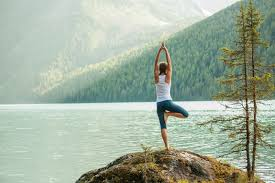

Virkrasan is a sanskrit word in which 'virk' means 'tree'and 'asan' means 'posture'
.Vikrasan also know
as Tree Of Life is one of the best yoga asan for stability
power, solidity and patience.
We should try to be as strong as a tree.
Like it doesnot complain in any season i.e
winter, summer, monsoon, and even
don't lose hope in autumn, it tries its best to overcome all this turmoil
.
Steps to do it.
1) Bend your left knee and place your foot on the right leg ( till wherever
you can reach, the perfect position in feet on the thighof the other leg.
2) Focus on your right leg and try to concentrate as much as you can. Think
your feet as if it is root of tree and can't fall easily.
3) Now join you hands ( in namaste mudra or praying hands ) in front of
of your chest.
4) When you feel stable, move your hands up above your head, arms close to
ears. Straight your back and feel as a beautiful tree.
5) Hold for sometime and them change change the foot and repeat the same
process.

Some Special and Healthy Yoga and Meditation Positions.
1) Anulom Vilom
2) Sukhasan
This Vikaran is a very special and peacefull yoga asan. It helps us to concentrate
and be patience and strong like a tree. We should never complain on thing we didnt get.
Hope this blog helped you . Also check my website and my social media handles.